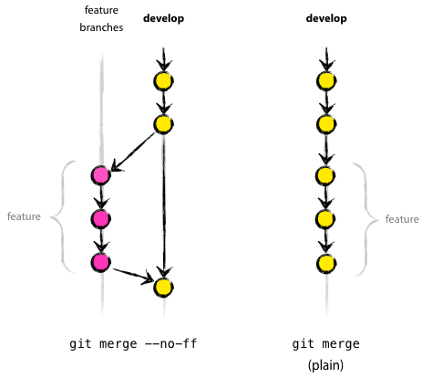

1 Instalación y configuración de Git
1.1 Instalación de Git
Para instalar Git en tu sistema operativo, sigue los siguientes pasos:
- Primero tienes que actualizar tu sistema operativo :
- Instalación en Linux :
- Comprueba la versión de git que estás usando :
1.2 Configuración de Git
Debes establecer tu nombre de usuario y dirección de correo electrónico. Esto es importante porque las confirmaciones de cambios (commits) en Git usan esta información.
$ git config --global user.name "John Doe"
$ git config --global user.email johndoe@example.com
$ git config --global push.default simple
1.3 Configuración de la clave SSH
2 Uso básico de Git
2.1 Estados de un archivo en GIT
Un archivo puede estar en alguno de los siguientes estados:
- Sin seguimiento (untracked)
- Modificado (modified)
- Preparado (staged)
- Confirmado (commited)
Para consultar el estado de los archivos usamos el comando:
2.2 Crear un proyecto
- Creamos un directorio donde colocar el código:
- Creamos un fichero
hola.phpque muestre Hola Mundo :
- Crear el repositorio :
El archivo hola.php estará en el Workspace o Working Directory.
+-------------+ +-------------+ +-------------+
| Working | | Staging | | Local |
| Directory | | Area | | Repository |
+------+------+ +------+------+ +------+------+
| | |
hola.php | |
| | |
+ + +
- Añadir la aplicación :
- Comprobar el estado del proyecto :
Al ejecutar el git add, el archivo pasará a la "Staging area" o área de preparación.
+-------------+ +-------------+ +-------------+
| Working | | Staging | | Local |
| Directory | | Area | | Repository |
+------+------+ +------+------+ +------+------+
| | |
| hola.php |
| | |
+ + +
- Hacer un commit :
El archivo pasará al "Local Ropository" y se le asignará un hash o código de inserción.
+-------------+ +-------------+ +-------------+
| Workspace | | Staging | | Local |
| | | Area | | Repository |
+------+------+ +------+------+ +------+------+
| | |
| | hola.php (e19f2c1)
| | |
+ + +
2.2.1 Ignorando archivos
Para indicarle a git que debe ignorar un archivo, se puede crear un fichero llamado .gitignore, bien en la raíz del proyecto o en los subdirectorios que queramos.
Dicho fichero puede contener patrones, uno en cada línea, que especiquen qué archivos deben ignorarse. El formato es el siguiente:
# .gitignore
dir1/ # ignora todo lo que contenga el directorio dir1
!dir1/info.txt # El operador ! excluye del ignore a dir1/info.txt (sí se guardaría)
dir2/*.txt # ignora todos los archivos txt que hay en el directorio dir2
dir3/**/*.txt # ignora todos los archivos txt que hay en el dir3 y sus subdirectorios
*.o # ignora todos los archivos con extensión .o en todos los directorios
Los archivos que hemos metido en .gitignore, deben ser aquellos ficheros temporales o de configuración que se pueden crear durante las fases de compilación o ejecución del programa
2.2.2 Ignorando archivos globalmente
Ejemplos de lo que se puede ignorar de forma global son los ficheros temporales del sistema operativo (*~, .nfs*) y los que generan los entornos de desarrollo.
Para indicar a git que queremos tener un fichero de gitignore global, tenemos que configurarlo con la siguiente orden:
Ahora podemos crear un archivo llamado .gitignore_global en la raíz de nuestra cuenta con este contenido:
# Compiled source #
###################
*.com
*.class
*.dll
*.exe
*.o
*.so
# Packages #
############
# it's better to unpack these files and commit the raw source
# git has its own built in compression methods
*.7z
*.dmg
*.gz
*.iso
*.jar
*.rar
*.tar
*.zip
# Logs and databases #
######################
*.log
*.sql
*.sqlite
# OS generated files #
######################
.DS_Store
.DS_Store?
._*
.Spotlight-V100
.Trashes
ehthumbs.db
Thumbs.db
*~
*.swp
# IDEs #
######################
.idea
.settings/
.classpath
.project
2.3 Trabajando con el historial
2.3.1 Observando los cambios
Con la orden $git log podemos ver todos los cambios que hemos hecho al directorio curso-de-git.
$ git log
commit fd4da946326fbe8b24e89282ad25a71721bf40f6 (HEAD -> master)
Author: Sergio Gómez <sergio@uco.es>
Date: Sun Jun 16 12:51:01 2013 +0200
Se añade un comentario al cambio del valor por defecto
commit 3283e0d306c8d42d55ffcb64e456f10510df8177
Author: Sergio Gómez <sergio@uco.es>
Date: Sun Jun 16 12:50:00 2013 +0200
Se añade un parámetro por defecto
commit efc252e11939351505a426a6e1aa5bb7dc1dd7c0
Author: Sergio Gómez <sergio@uco.es>
Date: Sun Jun 16 12:13:26 2013 +0200
Parametrización del programa
commit e19f2c1701069d9d1159e9ee21acaa1bbc47d264
Author: Sergio Gómez <sergio@uco.es>
Date: Sun Jun 16 11:55:23 2013 +0200
Creación del proyecto
Para salir escribe q.
2.3.2 Versiones abreviadas
$ git log --oneline
$ git log --oneline --max-count=2
$ git log --oneline --since='5 minutes ago'
$ git log --oneline --until='5 minutes ago'
$ git log --oneline --author=sergio # Cambia sergio por tu nombre de usuario
$ git log --oneline --all
$ git log --pretty=format:'%h %ad | %s%d [%an]' --graph --date=short
2.3.3 Crear alias
Como estas órdenes son demasiado largas, Git nos permite crear alias para crear nuevas órdenes parametrizadas.
- Para ello podemos configurar nuestro entorno con la orden
git configde la siguiente manera :
- Ahora basta con ejecutar :
2.3.4 Recuperando versiones anteriores
- Regresar a un commit anterior :
Cada cambio es etiquetado por un hash, para poder regresar a ese momento del estado del proyecto se usa la orden :
Prueba con el hash de tu primer commit:
$ git checkout e19f2c1
Note: switching to 'e19f2c1'.
You are in 'detached HEAD' state. You can look around, make experimental
changes and commit them, and you can discard any commits you make in this
state without impacting any branches by switching back to a branch.
If you want to create a new branch to retain commits you create, you may
do so (now or later) by using -c with the switch command. Example:
git switch -c <new-branch-name>
Or undo this operation with:
git switch -
urn off this advice by setting config variable advice.detachedHead to false
HEAD is now at e19f2c1 Parametrización del programa
Esto pone el repositorio en un estado "detached HEAD", donde puedes explorar o hacer cambios sin afectar ninguna rama.
Los cambios que realices en este estado no se guardarán a menos que los comites a una nueva rama:
2.3.5 Volver a la última rama
Si decides no mantener los cambios hechos en el estado "detached HEAD".
Puedes volver a la rama en la que estabas antes con:
Los cambios no comiteados en el estado "detached HEAD" se perderán.
2.3.6 Volver a la rama master
Para regresar a la rama principal (master o main) usa:
2.3.7 Etiquetar versiones
Listar todas las etiquetas:
Para facilitar la navegación y recuperación de versiones sin usar hashes, puedes etiquetar un commit con un nombre amigable:
Ejemplo:
Para etiquetar un commit anterior, puedes usar:
2.3.8 Ver cambios entre versiones
Puedes comparar los cambios entre dos etiquetas o commits con:
Ejemplo:
2.3.9 Borrar etiquetas
Si necesitas eliminar una etiqueta:
2.3.10 Visualizar el historial con etiquetas
Para ver el historial del proyecto junto con las etiquetas:
3 Uso avanzado de Git
3.1 Deshacer cambios
3.1.1 Deshaciendo cambios antes de la fase de staging
- Volvemos a la rama máster y vamos a modificar el comentario que pusimos:
$ git checkout master
Previous HEAD position was 3283e0d... Se añade un parámetro por defecto
Switched to branch 'master'
Recordamos, la situación es la siguiente:
+-------------+ +-------------+ +-------------+
| Working | | Staging | | Local |
| Directory | | Area | | Repository |
+------+------+ +------+------+ +------+------+
| | |
| | hola.php (fd4da94) tag: v1
| | hola.php (3283e0d) tag: v1-beta
| | hola.php (efc252e)
| | hola.php (e19f2c1)
| | |
+ + +
- Modificamos
hola.phpde la siguiente manera :
<?php
// Este comentario está mal y hay que borrarlo
$nombre = isset($argv[1]) ? $argv[1] : "Mundo";
@print "Hola, {$nombre}\n";
?>
- Comprobamos el estado :
$ git status
On branch master
Changes not staged for commit:
(use "git add <file>..." to update what will be committed)
(use "git restore <file>..." to discard changes in working directory)
modified: hola.php
no changes added to commit (use "git add" and/or "git commit -a")
Tenemos hola.php en Working Directory y nada en Staging Area.
+-------------+ +-------------+ +-------------+
| Working | | Staging | | Local |
| Directory | | Area | | Repository |
+------+------+ +------+------+ +------+------+
| | |
hola.php | |
| | hola.php (fd4da94) tag: v1
| | hola.php (3283e0d) tag: v1-beta
| | hola.php (efc252e)
| | hola.php (e19f2c1)
| | |
+ + +
- El mismo Git nos indica que debemos hacer para añadir los cambios o para deshacerlos.
En este caso los desharemos :
$ git restore hola.php
$ git status
On branch master
nothing to commit, working tree clean
$ cat hola.php
<?php
// El nombre por defecto es Mundo
$nombre = isset($argv[1]) ? $argv[1] : "Mundo";
@print "Hola, {$nombre}\n";
?>
3.1.2 Deshaciendo cambios antes del commit
Vamos a hacer lo mismo que la vez anterior, pero esta vez sí añadiremos el cambio al staging (sin hacer commit).
- Volvemos a modificar
hola.phpigual que la anterior ocasión :
<?php
// Este comentario está mal y hay que borrarlo
$nombre = isset($argv[1]) ? $argv[1] : "Mundo";
@print "Hola, {$nombre}\n";
?>
- Lo añadimos al
staging:
$ git add hola.php
$ git status
On branch master
Changes to be committed:
(use "git restore --staged <file>..." to unstage)
modified: hola.php
hola.php en Staging Area.
+-------------+ +-------------+ +-------------+
| Working | | Staging | | Local |
| Directory | | Area | | Repository |
+------+------+ +------+------+ +------+------+
| | |
| hola.php |
| | hola.php (fd4da94) tag: v1
| | hola.php (3283e0d) tag: v1-beta
| | hola.php (efc252e)
| | hola.php (e19f2c1)
| | |
+ + +
- Sacamos el archivo de la zona de Staging :
$ git restore --staged hola.php
$ git status
On branch master
Changes not staged for commit:
(use "git add <file>..." to update what will be committed)
(use "git restore <file>..." to discard changes in working directory)
modified: hola.php
no changes added to commit (use "git add" and/or "git commit -a")
Vuelve a estar en Working Directory.
+-------------+ +-------------+ +-------------+
| Working | | Staging | | Local |
| Directory | | Area | | Repository |
+------+------+ +------+------+ +------+------+
| | |
hola.php | |
| | hola.php (fd4da94) tag: v1
| | hola.php (3283e0d) tag: v1-beta
| | hola.php (efc252e)
| | hola.php (e19f2c1)
| | |
+ + +
- Restaruramos la última versión en Local Repository, eliminando la versión en Working Directory :
Y ya tenemos nuestro repositorio limpio otra vez.
Como vemos hay que hacerlo en dos pasos:
- Uno para pasar el fichero de Staging Area a Working Directory y limpiar así la Staging Area.
- Otro para descartar los cambios en Working Directory.
3.1.3 Deshaciendo commits no deseados
Si hemos hecho un commit y queremos deshacerlo, podemos usar la orden $ git revert :
$ git revert HEAD --no-edit
[master 817407b] Revert "Ups... este commit está mal"
1 file changed, 1 insertion(+), 1 deletion(-)
- git revert HEAD: Reviertes el último commit (el que apunta HEAD). Esto crea un nuevo commit que deshace los cambios realizados en ese commit.
- --no-edit: Este parámetro le indica a Git que use el mensaje de commit por defecto que genera automáticamente (algo como "Revert 'mensaje original del commit'") y no abra el editor para modificarlo.
$ git hist
* 817407b 2013-06-16 | Revert "Ups... este commit está mal" (HEAD -> master) [Sergio Gómez]
* 5a5d067 2013-06-16 | Ups... este commit está mal [Sergio Gómez]
* fd4da94 2013-06-16 | Se añade un comentario al cambio del valor por defecto (tag: v1) [Sergio Gómez]
* 3283e0d 2013-06-16 | Se añade un parámetro por defecto (tag: v1-beta) [Sergio Gómez]
* efc252e 2013-06-16 | Parametrización del programa [Sergio Gómez]
* e19f2c1 2013-06-16 | Creación del proyecto [Sergio Gómez]
3.1.4 Borrar commits de una rama
Para borrar commits y no dejar huella en el historial, utilizamos $ git reset :
$ git reset --hard <nombre-o-hash-del-commit>
$ git reset --hard v1
HEAD is now at fd4da94 Se añade un comentario al cambio del valor por defecto
$ git hist
* fd4da94 2013-06-16 | Se añade un comentario al cambio del valor por defecto (HEAD -> master, tag: v1) [Sergio Góme
* 3283e0d 2013-06-16 | Se añade un parámetro por defecto (tag: v1-beta) [Sergio Gómez]
* efc252e 2013-06-16 | Parametrización del programa [Sergio Gómez]
* e19f2c1 2013-06-16 | Creación del proyecto [Sergio Gómez]
Danger
La orden reset es una operación delicada. Debe evitarse si no se sabe bien lo que se está haciendo, sobre todo cuando se trabaja en repositorios compartidos, porque podríamos alterar la historia de cambios lo cual puede provocar problemas de sincronización.
3.1.5 Modificar un commit
Si olvidaste añadir un cambio a un commit reciente, puedes modificar el último commit.
- Volvemos a modificar nuestro archivo :
<?php
// Autor: Sergio Gómez <sergio@uco.es>
// El nombre por defecto es Mundo
$nombre = isset($argv[1]) ? $argv[1] : "Mundo";
@print "Hola, {$nombre}\n";
?>
- Usamos
commit --amendque nos permite modificar el último estado confirmado, sustituyéndolo por el estado actual :
$ git add hola.php
$ git commit --amend -m "Añadido el autor del programa y su email"
[master 96a39df] Añadido el autor del programa y su email
1 file changed, 1 insertion(+)
$ git hist
* 96a39df 2013-06-16 | Añadido el autor del programa y su email (HEAD -> master) [Sergio Gómez]
* fd4da94 2013-06-16 | Se añade un comentario al cambio del valor por defecto (tag: v1) [Sergio Gómez]
* 3283e0d 2013-06-16 | Se añade un parámetro por defecto (tag: v1-beta) [Sergio Gómez]
* efc252e 2013-06-16 | Parametrización del programa [Sergio Gómez]
* e19f2c1 2013-06-16 | Creación del proyecto [Sergio Gómez]
Danger
Nunca modifiques un commit que ya hayas sincronizado con otro repositorio o que hayas recibido de él. Estarías alterando la historia de cambios y provocarías problemas de sincronización.
3.2 Moviendo y borrando archivos
3.2.1 Mover un archivo a otro directorio con git
Para mover archivos usaremos la orden $ git mv:
$ mkdir lib
$ git mv hola.php lib
$ git status
On branch master
Changes to be committed:
(use "git reset HEAD <file>..." to unstage)
renamed: hola.php -> lib/hola.php
3.2.2 Borrar archivos
- Borrar un archivo :
- Guardar los cambios :
$ git commit -m "Movido hola.php a lib."
[master 8c2a509] Movido hola.php a lib.
1 file changed, 0 insertions(+), 0 deletions(-)
rename hola.php => lib/hola.php (100%)
4 Ramas
4.1 Administración de ramas
4.1.1 Crear una nueva rama
Es conveniente trabajar en una nueva rama, para no modificar la rama principal y dejarla inestable.
Aunque la orden para manejar ramas es $ git branch podemos usar también $ git checkout.
- Crear una nueva rama :
Info
Si usamos git branch sin ningún argumento, nos devolverá la lista de ramas
disponibles.
- La creación de una rama no cambia automáticamente a esa rama, por lo que debemos cambiar con :
Tip
Puedes hacer ambas acciones en un solo paso :
* Con el parámetro -b de git checkout podemos cambiarnos a una rama que, si no existe, se crea instantáneamente.
$ git checkout -b hola
Switched to a new branch 'hola'
4.1.2 Modificaciones en la rama secundaria
- Añadimos un nuevo archivo en el directorio
libllamadoHolaMundo.php:
<?php
class HolaMundo
{
private $nombre;
function __construct($nombre)
{
$this->nombre = $nombre;
}
function __toString()
{
return sprintf ("Hola, %s.\n", $this->nombre);
}
}
?>
- Modificamos
hola.php:
<?php
// Autor: Sergio Gómez <sergio@uco.es>
// El nombre por defecto es Mundo
require('HolaMundo.php');
$nombre = isset($argv[1]) ? $argv[1] : "Mundo";
print new HolaMundo($nombre);
?>
- Hacemos commit de los cambios uno por uno :
$ git add lib/HolaMundo.php
$ git commit -m "Añadida la clase HolaMundo"
$ git add lib/hola.php
$ git commit -m "hola usa la clase HolaMundo"
- Y con la orden
git checkoutpodemos movernos entre ramas :
4.1.3 Modificaciones en la rama master
- Cambiamos a la rama
master:
- Añadimos un archivo
README.md:
- Podemos visualizar todos los cambios en todas las ramas usando :
4.2 Fusión de ramas y resolución de conflictos
4.2.1 Mezclar ramas
Podemos fusionar los cambios de una rama con otra usando $git merge.
Por ejemplo, fusionamos los cambios de master en la rama hola :
- Cambiamos a la rama
hola:
- Ejecutamos el
$git merge nombreramacon el nombre de la rama cuyos cambios queremos incorporar a la actual :
$ git merge master
Merge made by the 'ort' strategy.
README.md | 3 +++
1 file changed, 3 insertions(+)
create mode 100644 README.md
- Comprobamos el historial de cambios :
$ git hist --all
* 9c6ac06 2013-06-16 | Merge branch 'master' into hola (HEAD -> hola) [Sergio Gómez]
|\
| * c3e65d0 2013-06-16 | Añadido README.md [Sergio Gómez]
* | 9862f33 2013-06-16 | hola usa la clase HolaMundo [Sergio Gómez]
* | 6932156 2013-06-16 | Añadida la clase HolaMundo [Sergio Gómez]
|/
* 81c6e93 2013-06-16 | Movido hola.php a lib [Sergio Gómez]
* 96a39df 2013-06-16 | Añadido el autor del programa y su email [Sergio Gómez]
* fd4da94 2013-06-16 | Se añade un comentario al cambio del valor por defecto (tag: v1) [Sergio Gómez]
* 3283e0d 2013-06-16 | Se añade un parámetro por defecto (tag: v1-beta) [Sergio Gómez]
* efc252e 2013-06-16 | Parametrización del programa [Sergio Gómez]
* e19f2c1 2013-06-16 | Creación del proyecto [Sergio Gómez]
De esa forma se puede trabajar en una rama secundaria incorporando los cambios de la rama principal o de otra rama.
4.2.2 Resolver conflictos
Un conflicto es cuando se produce una fusión que Git no es capaz de resolver.
Vamos a modificar la rama master para crear uno con la rama hola:
- Cambiamos a
master:
- Modificamos nuestro archivo
hola.php:
<?php
// Autor: Sergio Gómez <sergio@uco.es>
print "Introduce tu nombre:";
$nombre = trim(fgets(STDIN));
@print "Hola, {$nombre}\n";
?>
- Guardamos los cambios :
$ git add lib/hola.php
$ git commit -m "Programa interactivo"
[master 9c85275] Programa interactivo
1 file changed, 2 insertions(+), 2 deletions(-)
$ git hist --all
- Comprobamos el resultado :
$ git hist --all
* 8ca56f7 2013-06-16 | Programa interactivo (HEAD -> master) [Sergio Gómez]
| * 9c6ac06 2013-06-16 | Merge branch 'master' into hola (hola) [Sergio Gómez]
| |\
| |/
|/|
* | c3e65d0 2013-06-16 | Añadido README.md [Sergio Gómez]
| * 9862f33 2013-06-16 | hola usa la clase HolaMundo [Sergio Gómez]
| * 6932156 2013-06-16 | Añadida la clase HolaMundo [Sergio Gómez]
|/
* 81c6e93 2013-06-16 | Movido hola.php a lib [Sergio Gómez]
* 96a39df 2013-06-16 | Añadido el autor del programa y su email [Sergio Gómez]
* fd4da94 2013-06-16 | Se añade un comentario al cambio del valor por defecto (tag: v1) [Sergio Gómez]
* 3283e0d 2013-06-16 | Se añade un parámetro por defecto (tag: v1-beta) [Sergio Gómez]
* efc252e 2013-06-16 | Parametrización del programa [Sergio Gómez]
* e19f2c1 2013-06-16 | Creación del proyecto [Sergio Gómez]
- Volvemos a la rama
hola:
- Fusionamos.
$ git merge master
Auto-merging lib/hola.php
CONFLICT (content): Merge conflict in lib/hola.php
Automatic merge failed; fix conflicts and then commit the result.
Recuerda que hemos modificado hola.php en la rama master y ahora hay líneas distintas dentro de ese fichero en cada una de las ramas.
- Editamos nuestro archivo
lib/hola.phpy obtendremos algo similar a esto :
<?php
// Autor: Sergio Gómez <sergio@uco.es>
<<<<<<< HEAD
// El nombre por defecto es Mundo
require('HolaMundo.php');
$nombre = isset($argv[1]) ? $argv[1] : "Mundo";
print new HolaMundo($nombre);
=======
print "Introduce tu nombre:";
$nombre = trim(fgets(STDIN));
@print "Hola, {$nombre}\n";
>>>>>>> master
?>
- Resolvemos el conflicto, dejando el archivo como sigue :
<?php
// Autor: Sergio Gómez <sergio@uco.es>
require('HolaMundo.php');
print "Introduce tu nombre:";
$nombre = trim(fgets(STDIN));
print new HolaMundo($nombre);
?>
- Confirmamos los cambios :
$ git add lib/hola.php
$ git commit -m "Solucionado el conflicto al fusionar con la rama master"
[hola a36af04] Solucionado el conflicto al fusionar con la rama master
4.2.3 Rebasing vs Merging
4.2.3.1 Rebasing
Rebasing es otra técnica para fusionar distinta a merge y usa la orden $git rebase :
El rebase Vuelve a aplicar todos los cambios a la rama máster, desde su nodo más reciente.
Eso significa que se modifica el orden o la historia de creación de los cambios.
Por eso rebase no debe usarse si el orden es importante o si la rama es compartida.
- Vamos a dejar nuestro proyecto como estaba antes del fusionado.
$ git checkout hola
Switched to branch 'hola'
$ git hist
* a36af04 2013-06-16 | Solucionado el conflicto al fusionar con la rama master (HEAD -> hola) [Sergio Gómez]
|\
| * 9c85275 2013-06-16 | Programa interactivo (master) [Sergio Gómez]
* | 9c6ac06 2013-06-16 | Merge branch 'master' into hola [Sergio Gómez]
|\|
| * c3e65d0 2013-06-16 | Añadido README.md [Sergio Gómez]
* | 9862f33 2013-06-16 | hola usa la clase HolaMundo [Sergio Gómez]
* | 6932156 2013-06-16 | Añadida la clase HolaMundo [Sergio Gómez]
|/
* 81c6e93 2013-06-16 | Movido hola.php a lib [Sergio Gómez]
* 96a39df 2013-06-16 | Añadido el autor del programa y su email [Sergio Gómez]
* fd4da94 2013-06-16 | Se añade un comentario al cambio del valor por defecto (tag: v1) [Sergio Gómez]
* 3283e0d 2013-06-16 | Se añade un parámetro por defecto (tag: v1-beta) [Sergio Gómez]
* efc252e 2013-06-16 | Parametrización del programa [Sergio Gómez]
* e19f2c1 2013-06-16 | Creación del proyecto [Sergio Gómez]
Para ello podemos usar la orden git reset que nos permite mover HEAD donde queramos.
- El estado después de deshacer los
merge:
$ git hist --all
* 9862f33 2013-06-16 | hola usa la clase HolaMundo (HEAD, hola) [Sergio Gómez]
* 6932156 2013-06-16 | Añadida la clase HolaMundo [Sergio Gómez]
| * 9c85275 2013-06-16 | Programa interactivo (master) [Sergio Gómez]
| * c3e65d0 2013-06-16 | Añadido README.md [Sergio Gómez]
|/
* 81c6e93 2013-06-16 | Movido hola.php a lib [Sergio Gómez]
* 96a39df 2013-06-16 | Añadido el autor del programa y su email [Sergio Gómez]
* fd4da94 2013-06-16 | Se añade un comentario al cambio del valor por defecto (tag: v1) [Sergio Gómez]
* 3283e0d 2013-06-16 | Se añade un parámetro por defecto (tag: v1-beta) [Sergio Gómez]
* efc252e 2013-06-16 | Parametrización del programa [Sergio Gómez]
* e19f2c1 2013-06-16 | Creación del proyecto [Sergio Gómez]
- Vamos a hacer un rebase. Continuamos en la rama
holay ejecutamos lo siguiente :
$ git rebase master
Auto-merging lib/hola.php
CONFLICT (content): Merge conflict in lib/hola.php
error: could not apply 9862f33... hola usa la clase HolaMundo
hint: Resolve all conflicts manually, mark them as resolved with
hint: "git add/rm <conflicted_files>", then run "git rebase --continue".
hint: You can instead skip this commit: run "git rebase --skip".
hint: To abort and get back to the state before "git rebase", run "git rebase --abort".
Could not apply 9862f33... hola usa la clase HolaMundo
- Resolvemos el conflicto del archivo
hola.php:
<?php
// Autor: Sergio Gómez <sergio@uco.es>
require('HolaMundo.php');
print "Introduce tu nombre:";
$nombre = trim(fgets(STDIN));
print new HolaMundo($nombre);
?>
- Añadimos los cambios en
staging:
$ git add lib/hola.php
$ git status
interactive rebase in progress; onto 269eaca
Last commands done (2 commands done):
pick 4e0f425 Añadida clase HolaMundo
pick 9862f33 hola usa la clase HolaMundo
No commands remaining.
You are currently rebasing branch 'hola' on '8ca56f7'.
(all conflicts fixed: run "git rebase --continue")
Changes to be committed:
(use "git restore --staged <file>..." to unstage)
modified: lib/hola.php
- En esta ocasión, no tenemos que hacer
$git commit, sino continuar con elrebase:
$ git rebase --continue
[detached HEAD 9862f33] hola usa la clase HolaMundo
1 file changed, 3 insertions(+), 1 deletion(-)
Successfully rebased and updated refs/heads/hola.
- El árbol tiene un aspecto distinto y mucho más limpio :
$ git hist --all
* 9862f33 2013-06-16 | hola usa la clase HolaMundo (HEAD -> hola) [Sergio Gómez]
* 6932156 2013-06-16 | Añadida la clase HolaMundo [Sergio Gómez]
* 9c85275 2013-06-16 | Programa interactivo (master) [Sergio Gómez]
* c3e65d0 2013-06-16 | Añadido README.md [Sergio Gómez]
* 81c6e93 2013-06-16 | Movido hola.php a lib [Sergio Gómez]
* 96a39df 2013-06-16 | Añadido el autor del programa y su email [Sergio Gómez]
* fd4da94 2013-06-16 | Se añade un comentario al cambio del valor por defecto (tag: v1) [Sergio Gómez]
* 3283e0d 2013-06-16 | Se añade un parámetro por defecto (tag: v1-beta) [Sergio Gómez]
* efc252e 2013-06-16 | Parametrización del programa [Sergio Gómez]
* e19f2c1 2013-06-16 | Creación del proyecto [Sergio Gómez]
4.3 Mezclando con la rama master
Una vez hemos terminado de implementar los cambios en la rama secundaria, llevamos los cambios a la rama principal.
- Cambiamos a la rama
master:
4.3.1 Merge fast-forward
- Usamos
git mergede tipofast-forwardpara hacer una fusión normal y que no deja rastro :
$ git merge hola
Updating c3e65d0..491f1d2
Fast-forward
lib/HolaMundo.php | 16 ++++++++++++++++
lib/hola.php | 4 +++-
2 files changed, 19 insertions(+), 1 deletion(-)
create mode 100644 lib/HolaMundo.php
- Comprobamos el árbol :
$ git hist --all
* 9862f33 2013-06-16 | hola usa la clase HolaMundo (HEAD -> master, hola) [Sergio Gómez]
* 6932156 2013-06-16 | Añadida la clase HolaMundo [Sergio Gómez]
* 9c85275 2013-06-16 | Programa interactivo [Sergio Gómez]
* c3e65d0 2013-06-16 | Añadido README.md [Sergio Gómez]
* 81c6e93 2013-06-16 | Movido hola.php a lib [Sergio Gómez]
* 96a39df 2013-06-16 | Añadido el autor del programa y su email [Sergio Gómez]
* fd4da94 2013-06-16 | Se añade un comentario al cambio del valor por defecto (tag: v1) [Sergio Gómez]
* 3283e0d 2013-06-16 | Se añade un parámetro por defecto (tag: v1-beta) [Sergio Gómez]
* efc252e 2013-06-16 | Parametrización del programa [Sergio Gómez]
* e19f2c1 2013-06-16 | Creación del proyecto [Sergio Gómez]
4.3.2 Merge --no-fast-forward (--no-ff)
- Reseteamos
masteral estado"Programa interactivo":
- Comprobamos el árbol :
$ git hist
* 9c85275 2013-06-16 | Programa interactivo (master) [Sergio Gómez]
* c3e65d0 2013-06-16 | Añadido README.md [Sergio Gómez]
* 81c6e93 2013-06-16 | Movido hola.php a lib [Sergio Gómez]
* 96a39df 2013-06-16 | Añadido el autor del programa y su email [Sergio Gómez]
* fd4da94 2013-06-16 | Se añade un comentario al cambio del valor por defecto (tag: v1) [Sergio Gómez]
* 3283e0d 2013-06-16 | Se añade un parámetro por defecto (tag: v1-beta) [Sergio Gómez]
* efc252e 2013-06-16 | Parametrización del programa [Sergio Gómez]
* e19f2c1 2013-06-16 | Creación del proyecto [Sergio Gómez]
- Usamos
git mergede tipo--no-fast-forward(--no-ff) para hacer una fusión que deja rastro de las dos ramas :
$ git merge -m "Aplicando los cambios de la rama hola" --no-ff hola
Merge made by the 'recursive' strategy.
lib/HolaMundo.php | 16 ++++++++++++++++
lib/hola.php | 4 +++-
2 files changed, 19 insertions(+), 1 deletion(-)
create mode 100644 lib/HolaMundo.php
- Comprobamos el árbol :
$ git hist --all
* 2eab8ca 2013-06-16 | Aplicando los cambios de la rama hola (HEAD -> master) [Sergio Gomez]
*\
| * 9862f33 2013-06-16 | hola usa la clase HolaMundo (hola) [Sergio Gómez]
| * 6932156 2013-06-16 | Añadida la clase HolaMundo [Sergio Gómez]
|/
* 9c85275 2013-06-16 | Programa interactivo (master) [Sergio Gómez]
* c3e65d0 2013-06-16 | Añadido README.md [Sergio Gómez]
* 81c6e93 2013-06-16 | Movido hola.php a lib [Sergio Gómez]
* 96a39df 2013-06-16 | Añadido el autor del programa y su email [Sergio Gómez]
* fd4da94 2013-06-16 | Se añade un comentario al cambio del valor por defecto (tag: v1) [Sergio Gómez]
* 3283e0d 2013-06-16 | Se añade un parámetro por defecto (tag: v1-beta) [Sergio Gómez]
* efc252e 2013-06-16 | Parametrización del programa [Sergio Gómez]
* e19f2c1 2013-06-16 | Creación del proyecto [Sergio Gómez]
En la siguiente imagen se puede ver la diferencia:

5 Github
5.1 Tu clave pública/privada
Muchos servidores Git utilizan autenticación mediante claves SSH. Para generar una nueva clave:
Esta clave se almacenará en tu sistema para permitir la autenticación con repositorios remotos. Asegúrate de no compartir la clave privada con nadie, ya que esta es tu identificador ante los servidores.
5.2 Configuración
Agrega tu clave SSH generada anteriormente en GitHub:
- Ve a Settings en tu perfil de GitHub.
- Selecciona SSH and GPG Keys.
- Añade una nueva clave copiando el contenido de
~/.ssh/id_rsa.puby pega en el campo Key. - Dale un nombre a la clave en Title y guarda.
5.3 Crear un repositorio
Para crear un repositorio en GitHub:
- Haz clic en el signo
+en la barra superior y selecciona New repository. - Dale un nombre, por ejemplo:
taller-de-git. - Para sincronizar un repositorio existente en tu equipo:
Copiar código
$ git remote add origin git@github.com:usuario/taller-de-git.git
$ git branch -M main
$ git push -u origin main
5.4 Clonar un repositorio
Para clonar un repositorio desde GitHub en tu equipo local:
Este comando descarga todos los archivos del repositorio y te permite comenzar a trabajar con ellos en tu equipo.
5.5 Ramas remotas
Podemos ver las ramas remotas para comprobar la sincronización de nuestro repositorio local con el remoto. Usa el comando:
$ git remote show origin
* remote origin
Fetch URL: git@github.com:sgomez/taller-de-git.git
Push URL: git@github.com:sgomez/taller-de-git.git
HEAD branch: main
Remote branch:
main tracked
Local ref configured for 'git push':
main pushes to main (up to date)
Te mostrará información sobre fetch (para traer cambios) y push (para enviar cambios). La rama principal se suele llamar origin/main.
5.6 Enviando actualizaciones
Cuando realizas cambios en tu repositorio local, asegúrate de enviarlos a GitHub:
Si necesitas vincular la rama local con una remota, utiliza:
Esto facilita futuros push sin tener que especificar el origen.
5.7 Recibiendo actualizaciones
Para actualizar tu repositorio local con los últimos cambios hechos en GitHub:
- Trae la información de los cambios realizados en GitHub con
git fetch, pero no importa directamente los cambios en local.
- Incorporar los cambios de la rama remota en la local, usando
git mergeogit rebase.
También puedes combinar ambos pasos con git pull que realiza las dos acciones simultáneamente :
$ git pull
remote: Enumerating objects: 5, done.
remote: Counting objects: 100% (5/5), done.
remote: Compressing objects: 100% (3/3), done.
remote: Total 3 (delta 0), reused 0 (delta 0), pack-reused 0
Unpacking objects: 100% (3/3), 811 bytes | 811.00 KiB/s, done.
From github.com:sgomez/taller-de-git
cbaf831..d8922e4 main -> origin/main
Updating 6e4cda3..bb3dc3e
Fast-forward
README.md | 2 +-
1 file changed, 1 insertion(+), 1 deletion(-)
5.8 Problemas de sincronización
5.8.1 No puedo hacer push
Al intentar subir cambios nos podemos encontrar un mensaje como este:
$ git push
git push
To git@github.com:sgomez/taller-de-git.git
! [rejected] main -> main (fetch first)
error: failed to push some refs to 'git@github.com:sgomez/taller-de-git.git'
hint: Updates were rejected because the remote contains work that you do
hint: not have locally. This is usually caused by another repository pushing
hint: to the same ref. You may want to first integrate the remote changes
hint: (e.g., 'git pull ...') before pushing again.
hint: See the 'Note about fast-forwards' in 'git push --help' for details.
La causa es que el repositorio remoto también se ha actualizado y nosotros aún no hemos recibido esos cambios. Es decir, ambos repositorios se han actualizado y el remoto tiene preferencia. Hay un conflicto en ciernes y se debe resolver localmente antes de continuar.
- Trae los cambios y resuelve las diferencias de los archivos :
- Aplicas tus commits por encima de los cambios traídos. Si hay conflictos, tendrás que resolverlos antes de continuar :
- Una vez resueltos los conflictos, puedes finalizar el rebase con :
- Finalmente, cuando el rebase haya terminado y todos los conflictos se hayan resuelto, ya puedes hacer push :
Nota: Si estás colaborando con otras personas, merge suele ser una opción más segura, ya que no reescribe la historia. Sin embargo, rebase puede ser útil si deseas mantener una historia más limpia y fácil de seguir.
5.8.2 No puedo hacer pull
Cuando intentas hacer pull para traer cambios del repositorio remoto, pero tienes cambios locales sin confirmar en tu espacio de trabajo. Esto puede dar lugar a mensajes de error como los siguientes:
o
Causa del problema: Este error se produce porque Git necesita un espacio de trabajo limpio para poder integrar los cambios remotos. Si tienes cambios locales sin confirmar (modificaciones no guardadas mediante commit), Git no puede garantizar que esos cambios no entren en conflicto con los cambios que está trayendo desde el repositorio remoto.
Solución: Para resolver este problema tienes varias opciones:
- Confirmar los cambios locales (commit) :
La opción más sencilla es confirmar tus cambios locales para que Git pueda hacer pull sin problemas:
Esto guardará tus cambios en un nuevo commit, permitiendo que Git traiga los cambios remotos y luego los mezcle con los tuyos.
- Guardar los cambios locales temporalmente con stash :
Si no deseas hacer un commit porque tus cambios no están listos, puedes usar stash para guardar temporalmente los cambios y así dejar tu espacio de trabajo limpio para poder hacer el pull:
$git stash saveguarda los cambios actuales en una especie de pila temporal llamada stash.$git pulltrae los cambios remotos.$git stash poprestaura los cambios que habías guardado en el stash.
En caso de que haya conflictos después de hacer stash pop, deberás resolverlos manualmente como en cualquier otra operación de merge.
- Combinar stash con pull automáticamente :
Git también permite combinar estas acciones de forma automática. Puedes usar la opción --autostash para hacer pull y stash en un solo paso:
Esta opción guarda tus cambios en el stash, realiza el pull y luego aplica los cambios nuevamente desde el stash. Es una forma rápida de realizar ambas acciones cuando estás trabajando con cambios sin confirmar.
6 Flujo de trabajo en GitHub
6.1 Paso 0. Abrir una incidencia (issue)
El trabajo suele empezar con una incidencia o issue. Para ello, se usa la sección de Issues en GitHub. Una issue es básicamente una solicitud para resolver un problema o añadir una nueva característica. Al abrir una issue, se le asigna un título, una descripción (escrita en Markdown), y opcionalmente etiquetas, hitos, responsables, etc.
Ejemplo: Crear una issue titulada "Crear archivo de autores" para crear un archivo AUTHORS.md que contenga la lista de desarrolladores del proyecto.
6.2 Paso 1. Crear una rama
Crear una rama es el primer paso para empezar a implementar los cambios relacionados con la issue. Para cada nueva característica o corrección de errores, se debe crear una rama separada. El nombre de la rama debe seguir un formato consistente, por ejemplo:
Después de crear la rama, se sube al repositorio remoto con:
Esto crea una nueva rama en el repositorio remoto y permite crear un Pull Request (PR) desde GitHub.
6.3 Paso 2. Crear commits
Trabaja en los cambios que necesitas y crea commits para documentar el progreso:
Cada vez que hagas un cambio importante, confirma con commit y luego sube la rama con push:
Los commits aparecerán en el Pull Request abierto en GitHub para revisión.
6.4 Paso 3. Discutir
En GitHub, otros desarrolladores pueden revisar y discutir el Pull Request. Esto ayuda a garantizar la calidad del código y facilita la colaboración. Puedes etiquetar a revisores o asignar personas para la revisión del PR.
Pull Requests también permiten comentarios en línea sobre fragmentos de código específicos, lo que facilita una discusión detallada.
6.5 Paso 4. Desplegar
Una vez que se ha revisado el Pull Request y todos están de acuerdo, es momento de integrarlo en la rama principal. GitHub ofrece tres formas para hacer el merge de una rama:

6.5.1 Crear un merge commit
Este método fusiona la rama en la rama principal (main) sin eliminar la historia de los commits individuales:
Este enfoque mantiene el historial de todos los cambios realizados en la rama.
Info: GitHub siempre desactiva el fast forward.
6.5.2 Crear un rebase y merge
Rebase garantiza que los cambios de la rama se apliquen sobre los últimos cambios de main, creando una historia de commits más lineal:
Este método reordena los commits para que parezca que la característica se desarrolló al final de los cambios ya en main.
6.5.3 Crear un squash commit y un merge
El método de squash and merge combina todos los commits de la rama en un solo commit en la rama principal:
Este enfoque es útil para mantener el historial de main más limpio, ya que todos los cambios se registran como un único commit, lo cual es ideal cuando la rama incluye muchos commits pequeños.
Vamos a seleccionar este último (squash and merge) y le damos al botón para activarlo. Nos saldrá una caja para que podamos crear una descripción del commit y le damos a confirmar.
Ya hemos terminado y nos aparecerá una opción para borrar la rama, lo más recomendado para no tener ramas obsoletas.
Las consecuencias de esta acción son las siguientes:
- El PR aparecerá como estado merged y en la lista de PR como cerrado.
- El issue que abrimos se habrá cerrado automáticamente.
- En el listado de commits aparecerá solo uno con un enlace al PR (en vez de los dos commits que hicimos).
6.6 Paso 5. Sincronizar
Hemos cambiado el repositorio en GitHub, pero nuestra rama main local no contiene los mismos cambios que el de origin. Así que nos toca sincronizar y borrar la rama obsoleta:
Info:
¿Por qué squash and merge y no un merge o rebase? De nuevo depende de los gustos de cada equipo de desarrollo. Las características de squash es que elimina (relativamente) rastros de errores intermedios mientras se implementaba la rama, deja menos commits en la rama main y nos enlaza al PR donde se implementaron los cambios.
Para algunas personas estas características son unas ventajas, para otras no. Lo mejor es experimentar cada opción y que cada uno decida cómo quiere trabajar.
7 Colaboración en GitHub
7.1 Clonar un repositorio
Para colaborar en un proyecto existente, primero es necesario clonar el repositorio a nuestro espacio de trabajo local. Primero vamos a la web del proyecto y hacemos un "fork" para tener una copia propia. Luego, clonamos nuestro fork localmente:
7.1.1 Sincronizar con el repositorio original
Cuando hacemos un "fork" de un proyecto, se crea una copia que no se actualiza con los cambios del proyecto original de manera automática. Para mantener nuestro fork actualizado, es necesario agregar el repositorio original como remoto:
Luego, para incorporar cambios del repositorio original, usamos:
7.1.2 Creando nuevas funcionalidades
Para crear una nueva funcionalidad o arreglar un error, primero creamos una nueva rama:
Luego, añadimos el código necesario y lo confirmamos con un commit:
$ echo "LICENCIA MIT" > LICENSE
$ git add LICENSE
$ git commit -m "Añadido archivo de licencia de uso"
Finalmente, enviamos los cambios a nuestro repositorio en GitHub:
En GitHub, podemos crear un "Pull Request" para sugerir los cambios al repositorio original.
7.1.3 Todo esto es algo complicado...
El trabajo en Git puede parecer complejo al principio, especialmente al manejar ramas y colaborar con repositorios remotos. La clave está en entender cada nivel de complejidad antes de avanzar al siguiente, desde los comandos básicos como add, commit y checkout, hasta los más avanzados como merge, rebase y push.
7.2 Último paso, documentación.
La documentación es esencial para que otros colaboradores entiendan el proyecto. Esto se puede hacer mediante un archivo README.md, una wiki o incluso una página web para el proyecto.
8 Otros comandos de Git
8.1 Git stash (reserva)
La orden git stash nos permite salvar momentáneamente el espacio de trabajo cuando tenemos que cambiar de rama o preparar la rama actual para sincronizar cambios.
Las operaciones más importantes que podemos hacer con git stash son:
8.1.1 git stash save
Es equivalente a poner solo git stash pero nos permite realizar más acciones como:
El parámetro -u permite que se almacenen también los ficheros sin seguimiento previo (untracked en inglés, aquellos ficheros que no se han metido nunca en el repositorio).
8.1.2 git stash list
Permite mostrar la pila del stash.
$ git stash list
stash@{0}: On master: Stash con mensaje
stash@{1}: WIP on master: 4ab21df First commit
8.1.3 git stash apply
Esta orden coge el stash que está arriba en la pila y lo aplica al espacio de trabajo actual. En este caso siempre es stash@{0}. El stash permanece en la pila.
Se puede indicar como parámetro un stash en concreto.
8.1.4 git stash pop
Funciona igual que git apply con la diferencia de que el stash sí se borra de la pila.
8.1.5 git stash show
Muestra un resumen de los ficheros que se han modificado en ese stash.
Para ver los cambios podemos usar el parámetro -p
Por defecto siempre muestra la cabeza de la pila. Igual que en casos anteriores podemos indicar un stash en concreto.
8.1.6 git stash branch
Permite crear una nueva rama a partir del último stash. Además, el mismo es borrado de la pila. Se puede especificar uno en concreto si lo queremos, como en el resto de comandos.
8.1.7 git stash clear
Este comando borra todos los stash de la pila. Es destructiva y no se puede deshacer.
8.1.8 git stash drop
Permite borrar un stash en concreto (o el último si no se indica ninguno). Como con clear, borrarlo implica que no se puede recuperar.
8.2 Git worktree
Uno de los problemas más habituales es tener que tocar una rama distinta a la que tenemos actualmente. Eso implica que si estamos en medio de un trabajo tendríamos que hacer un commit o un stash, lo cual a veces es bastante molesto.
Con git worktree podemos crear un directorio de trabajo que contenga otra rama distinta, de forma temporal. No supone otro clon del repositorio porque ambos usan el mismo.
8.2.1 git worktree add
Esta función es la que crea el espacio de trabajo temporal. Imaginemos que estamos en una rama llamada develop:
La primera orden crea un directorio llamado project-master que contiene el estado de master. La segunda, que contiene el parámetro -b equivale a crear una nueva rama llamada fix, que se crea desde master (suponemos que no existe fix).
8.2.2 git worktree list
Muestra el listado de directorios y espacios de trabajo.
8.2.3 git worktree remove
Borra un espacio de trabajo. Hay que indicar el nombre entre corchetes que aparece en el listado.
8.2.4 git worktree prune
Una cuestión importante es que las ramas que estén desplegadas en otro espacio de trabajo se encuentran bloqueadas y no se pueden desbloquear en otro distinto.
Esto significa que si estamos trabajando en la rama developer y creamos otro worktree en otro directorio de la rama master, no podemos pasar a master. No es posible tener la misma rama en varios espacios de trabajo.
Si se ha borrado el directorio a mano (en vez de usando remove), eso no implica que el bloqueo desparezca. Con esta orden podemos hacer que Git compruebe que los espacios de trabajo secundarios siguen existiendo y se elimine el bloqueo.
8.3 Git blame
Lo ideal en un equipo de desarrollo es que el código pase por todas las manos para así mejorar su calidad.
Con git blame podemos saber quién fue el último en modificar una línea concreta de código, en qué commit y en qué fecha lo hizo.